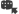
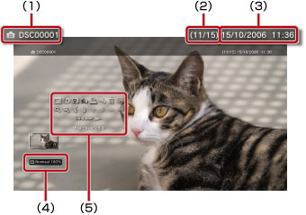

Foto > Het bedieningspaneel gebruiken
Het bedieningspaneel gebruiken
Verscheidene handelingen uitvoeren met het bedieningspaneel op het scherm. Het bedieningspaneel kan worden weergegeven of verborgen door te drukken op de  -toets.
-toets.
Weergavemodus

Het formaat veranderen van de afbeelding die op het scherm wordt getoond.
| Normaal | Stel deze optie in om de weergavegrootte van de afbeelding aan het scherm aan te passen zonder de verhoudingen te wijzigen. |
|---|---|
| Zoomen | Stel deze optie in om de afbeelding op volle schermgrootte weer te geven zonder de verhoudingen te wijzigen. Gedeeltes van de afbeelding aan de boven-, onder-, linker- en rechterkant vallen weg. |
Opmerking
Afhankelijk van het afbeeldingsbestand, kunt u de weergavemodus mogelijk niet wijzigen.
Effect wijzigen
De methode waarop de afbeeldingen overgaan wijzigen.
| Normaal | Stel deze optie in om de huidige afbeelding te vervangen door de volgende afbeelding. |
|---|---|
| Dia | Stel deze optie in om de huidige afbeelding te vervangen door de volgende afbeelding in een diashow. |
| Fade | Ingesteld om het fade-effect te gebruiken bij het overschakelen naar het volgende beeld. |
Trimmen
Verwijder overbodige stukken aan de bovenkant, onderkant, linker- of rechterzijde van een afbeelding. Gebruik de linker en rechter joystick van de draadloze controller om het deel te selecteren dat u wilt behouden. Gebruik de linker joystick om te scrollen in om het even welke richting en de rechter joystick om in of uit te zoomen. Bijgeknipte afbeeldingen worden opgeslagen onder een andere bestandsnaam.
Opmerking
Enkel afbeeldingen die opgeslagen zijn op de harde schijf van het PS3™-systeem kunnen worden getrimd.
Toevoegen aan afspeellijst
Voeg een afbeelding toe aan een afspeellijst.
Opmerking
Enkel afbeeldingen die op de harde schijf werden opgeslagen, kunnen aan een afspeellijst worden toegevoegd.
Afdrukken
Druk een beeld af met een printer.
Opmerking
Om deze functie te gebruiken, moet u eerst een printer configureren in [Printerselectie] onder  (Instellingen) >
(Instellingen) >  (Printerinstellingen).
(Printerinstellingen).
Als achtergrond instellen

De afbeelding die wordt weergegeven op het scherm instellen als achtergrond. De afbeelding wordt ingesteld precies zoals ze op het scherm verschijnt, ongeacht of ze vergroot, verkleind of gedraaid is.
Opmerkingen
- Wanneer geen achtergrond wordt gebruikt, past u de instelling aan onder (Instellingen) >
 (Thema-instellingen) > [Achtergrond].
(Thema-instellingen) > [Achtergrond]. - Op elk moment kan slechts één afbeelding zijn ingesteld als achtergrond. Als een andere afbeelding wordt geselecteerd, wordt de huidige afbeelding overschreven.
Verwijderen
Afbeeldingen verwijderen.
Opmerking
Enkel afbeeldingen die op de harde schijf werden opgeslagen, kunnen worden verwijderd.
Weergeven
Informatie over een afbeelding weergeven. Telkens als u op de  -toets drukt, wordt dit toegevoegd aan het scherm met Exif-informatie, het scherm met een informatiebalk en het scherm zonder bijkomende informatie.
-toets drukt, wordt dit toegevoegd aan het scherm met Exif-informatie, het scherm met een informatiebalk en het scherm zonder bijkomende informatie.
Een scherm met een informatiebalk

(1) |
Naam van afbeelding |
|---|---|
(2) |
Afbeeldingsnummer/totaal aantal afbeeldingen |
(3) |
Datum en tijd van de opname |
(4) |
Statuspictogram |
(5) |
Bedieningspaneel |
Inzoomen/Uitzoomen
In- of uitzoomen om een afbeelding te vergroten of te verkleinen. U kunt de linker joystick van de draadloze controller gebruiken om te scrollen in om het even welke richting en de rechter joystick gebruiken om in of uit te zoomen.
Links draaien/Rechts draaien
Het beeld 90 graden naar links of rechts draaien.
Omhoog/Omlaag/Links/Rechts
Verplaats de afbeelding om verborgen delen weer te geven, zoals wanneer (Weergavemodus) op [Zoomen] is ingesteld.
Vorige/Volgende
De vorige of volgende afbeelding weergeven.
Diashow
Alle afbeeldingen automatisch na elkaar weergeven.